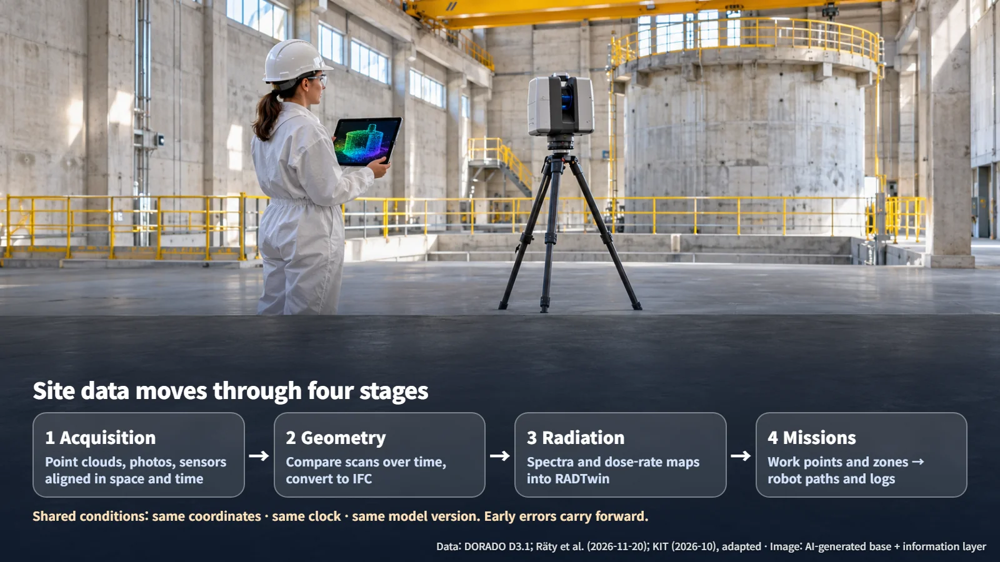
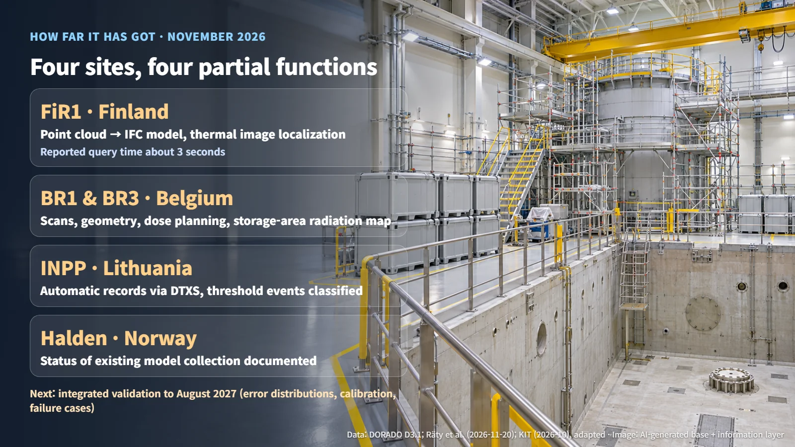
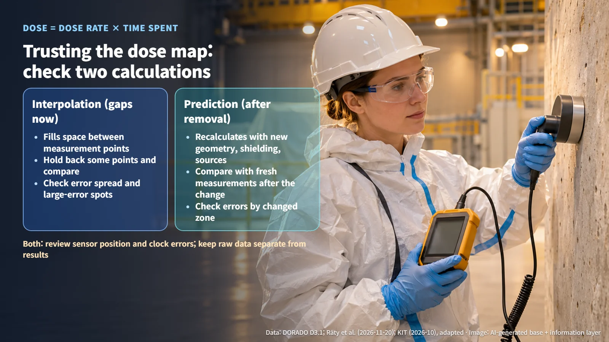

Europe · Decommissioning · Digital twin
What Has to Line Up Before Robots Enter a Decommissioning Site: Coordinates, Time and Dose in the DORADO Digital Twin
The Euratom-backed DORADO project links facility models, radiation measurements and robot missions; partial functions have been demonstrated and integrated validation runs to August 2027.
Picture nuclear decommissioning and you probably see workers in protective suits stepping into radiation areas. The obvious question follows: why not send robots and AI in their place? DORADO, a European research project, is built around that question. Its work so far points to a prerequisite that comes before any robot moves: the site data has to fit together, so that every measurement refers to the same place, the same moment and the same version of the plant.
DORADO (Digital Twins and Ontology for Robot Assisted Decommissioning Operations) is an EU project supported by Euratom, running from September 2024 to August 2027. It is coordinated by VTT Technical Research Centre of Finland, with partners including KIT in Germany and IFE in Norway, and it extends the results of the earlier PLEIADES project. A paper published in Frontiers in Nuclear Engineering on 20 November 2026 describes the integrated architecture and preliminary demonstrations. Read alongside KIT's October 2026 presentation, it places the project at the stage where partial functions have been demonstrated and integrated validation is under way.
Site Data Moves Through Four Stages
A few terms first. Building Information Modelling (BIM) attaches properties of components and spaces to a 3D model of the facility. A digital twin goes further: it keeps feeding in measurements and work progress so it can calculate the current state of the plant and the effect of planned changes. An ontology is a shared dictionary that defines what equipment, workers, robots, measurements and missions are, and how they relate. DTXS (Digital Twin Exchange Standard) is the server interface the project is developing so modules can exchange structured records, files and time-series streams through an API.
Reconstructed from the project documents, the data flow has four hand-offs:
| Stage | What happens | What passes to the next stage |
|---|---|---|
| 1. Site acquisition | Point clouds, photos and sensor values are captured and aligned in position and time | Measurements in common coordinates |
| 2. Geometry update | Point clouds from different dates are compared; semi-automatic conversion to IFC models | Change maps and facility model |
| 3. Radiation calculation | Spectra, dose-rate maps and geometry are fed into RADTwin | Updated dose-rate distribution |
| 4. Mission planning and execution | Work points and radiation zones are set and assigned to robots by capability | Inspection paths, positions and measurement logs |
(Source: DORADO Consortium, System Design and Data Plan, and Räty et al. 2026, reconstructed)
The key reading of this table is that a small mismatch early on is carried straight into every later stage. A robot building its map with SLAM (Simultaneous Localization and Mapping) creates local coordinates in each session, and those must be transformed into the facility's common coordinate system. The position offset and clock difference between a camera and a radiation sensor must be calibrated in advance. As dismantling proceeds, walls disappear and waste is moved, which changes both access routes and shielding. That is why the design records geometry changes together with changes in radiation sources and shielding, at the same point in time.

How Far the Demonstrations Have Gone: Evidence From Four Facilities
The publicly documented demonstrations differ from site to site:
- FiR1 research reactor, Finland: point clouds were segmented and converted into IFC models, and thermal imaging data was placed onto the BIM model in a localization demonstration. The reported query time was about 3 seconds.
- BR1 and BR3, Belgium: scanning, geometry and dose planning were presented, along with a radiation map of a storage area.
- Ignalina Nuclear Power Plant (INPP), Lithuania: records were generated automatically through the DTXS software development kit, and events exceeding radiation thresholds were classified and linked to their location.
- Halden research reactor, Norway: the design report documents the collection status of existing models.
Set side by side, the four sites map onto different parts of the chain: FiR1 covers geometry and localization, BR1 and BR3 cover radiation mapping, INPP covers event records, and Halden covers existing model collection. Each stage of the data flow has been shown at a different facility. The next set of evidence is clear: coordinate reference points and error distributions, measurement calibration and independent comparison points, and definitions of raw values, units and alarm thresholds. The 3-second query time is likewise a figure to be checked in the field together with position error, failure rate and network conditions.

Effectiveness will be assessed by linking business indicators (KBI) with system-level and technology-specific performance indicators (S-KPI, T-KPI), centred on avoided human entries and collective dose. A fair comparison of working time includes model preparation, calibration, retries and robot recovery. Field savings rates will be established through the site-by-site validation.
Trusting the Dose Map: Validating Interpolation and Prediction
The dose a worker receives depends on the dose rate at each location (exposure per unit time) and the time spent there. As a hypothetical example, standing for 30 minutes at a point with a dose rate of 0.5 mSv/h gives 0.5 × 0.5 = 0.25 mSv. If the map showed that point at half its true value, the planned dose would also come out at half. (All of these figures are illustrative assumptions.) This is why ALARA planning, which keeps exposure as low as reasonably achievable, depends on an accurate map that compares route, posture, stay time and shielding in the same scenario.
A dose map contains two different kinds of calculation. Interpolation fills the gaps between measurement points, so it is checked by holding back some measured points and comparing them with the predicted values. Prediction calculates the state after, say, a wall is removed, so it is checked against new measurements taken once geometry, shielding and sources have changed. A measurement with a large position error can place a radiation value from one spot at another, so sensor position and time-synchronization errors are reviewed alongside instrument calibration, and raw measurements are kept separately from converted and interpolated results.

IAEA Safety Guide SSG-47 recommends that decommissioning characterisation cover contamination, activation, dose rates and material condition together, and that maps be updated as decay and decontamination change conditions. The public material sets out no single dose-calculation error limit or model acceptance criterion for all facilities. Setting tolerances matched to measurement uncertainty and task risk is the next step for each site.
When a Robot Mission Stops, and What Gets Recorded
Robot missions are planned in two layers. High-level mission planning defines the inspection targets, start point, waypoints and measurement points. Lower-level planning combines these with the robot's mobility, sensors, payload and the site map to produce the actual sequence of movements and measurements. Robot modules run on ROS2 (Robot Operating System 2), while shared information is exchanged through DTXS.
On site, a communication drop, a loss of localization and an unexpected obstacle are three different failures. For each, the procedure has to be set in advance: stop, check remotely, recover the robot or replan, along with the data that must be updated before the mission resumes. The DTXS annex defines creating, modifying and querying records, as well as querying their history, so it is possible to trace when and why a measurement, model or alarm changed. A voice-input module lets staff fill in forms on site and syncs with the server when communication is available, followed by checks for duplicates, gaps and outdated model references.
A decommissioning robot's value comes as much from data whose coordinates, time stamps and versions agree as from the robot itself. Once the integrated validation running to August 2027 reports error distributions and failure-handling results, it will be possible to put numbers on how much this platform can reduce worker exposure.